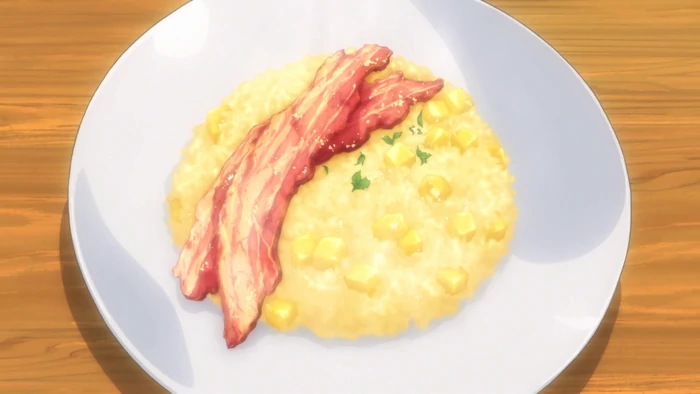

Apple Risotto

A breakfast dish intended to revitalize the diner.
Ingredients
- Apples
- Lemon Juice
- Onions
- Butter
- Rice
- White Wine
- Apple Juice
- Water
- Granulated Consomme
- Salt and Pepper
- Thick-cut Bacon
Recipe
- Cook the bacon in a frying pan until it's crispy and set to the side.
- Peel the apple and dice it in cubes of 1cm³.
- Mince the onion.
- Heat the butter in a frying pan and sauté the onions.
- Add the rice to (4) and cook until it's transparent.
- Add the white wine to (5) and cook it until the alcohol burns off.
- Mix the apple juice, water and consommé. Slowly add this 1/8 cup
at a time to (6) simmering on low heat for 15 minutes
(until all the liquid is absorbed).
- Add the apple dices and lemon juice to (7) and season it to taste with salt and pepper.
- Place (8) on a plate and top it with (1).
- Enjoy!
Return to Homepage